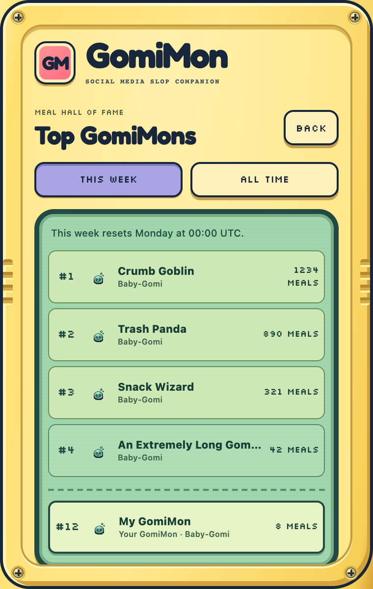
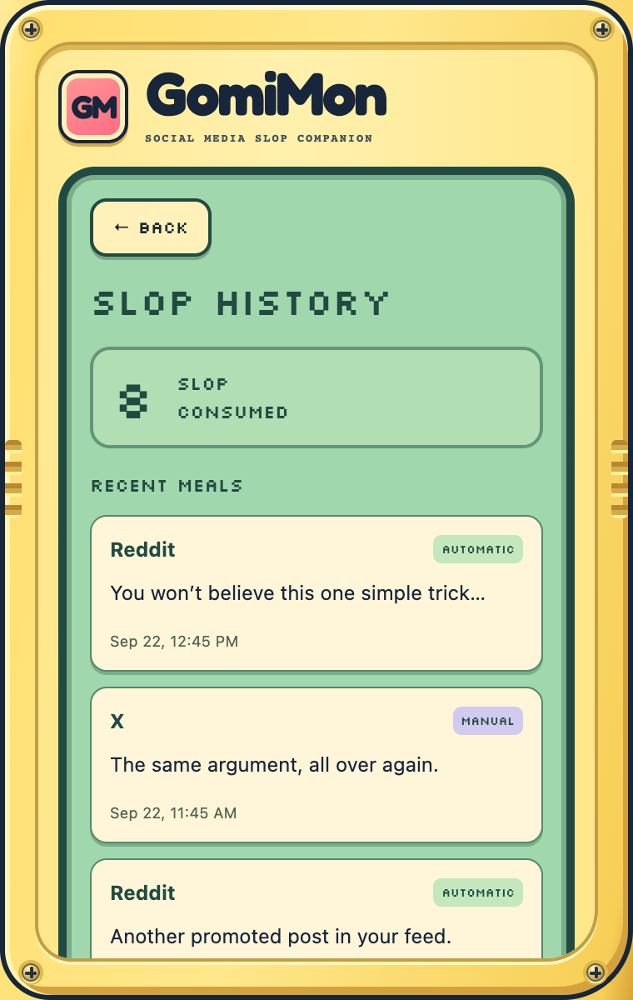

Stay in control
See every meal it eats.
Slop history shows recent meals, stored only in your browser
Restore any auto-hidden X post with
Show post
Join the meal leaderboard, or don't. It's optional.


Example data shown. GomiMon never posts, reports, or flags content for you.